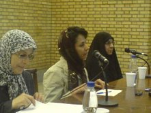

پذيرش > تریبون > گزارش كمپين > سمینارمطالبات حقوقی زنان و قانون گذاری در ایران
 در دانشگاه تهران برگزار شد: در دانشگاه تهران برگزار شد:

 سمینارمطالبات حقوقی زنان و قانون گذاری در ایران سمینارمطالبات حقوقی زنان و قانون گذاری در ایران
13 اسفند 1386 - مريم مالك - آيدا سعادت - نسخه قابل چاپ
روزیکشنبه ،12 اسفند ماه، سمینار«مطالبات حقوقی زنان و قانون گذاری در ایران » در تالار ابن خلدون دانشکده علوم اجتماعی دانشگاه تهران توسط انجمن اسلامی به مناسبت 8 مارس روز جهانی زن این دانشکده برگزار گردید. اين سمينار در قالب دو پنل برگزار شد . "كارنامه مجلس هفتم در حوزه زنان " موضوع مناظره فاطمه آجورلو و سهيلا جلودارزاده از نمايندگان دوره هفتم مجلس شوراي اسلامي اعلام شده بود . با عدم حضور فاطمه آجورلو ، اين قسمت با سخنراني سهيلا جلودار زاده برگزار شد.
پنل دوم این نشست نیز به موضوع "چشم انداز موقعيت زنان در مجلس هشتم" اختصاص داشت كه الهه كولايي و مريم بهروزي در اين زمينه به طرح ديدگاه هاي خود پرداختند. در پنل نهايي نيز ژيلا شريعت پناهي و سپس هم ناهيد كشاورز و شهلا اعزازي سخنراني کردند
" سهيلا جلودارزاده اولين سخنران اين نشست خلاصه ای فعالیتهای نمایندگان زن در مجلس هفتم را بیان نمود. وی با ابراز امیدواری در مورد اینکه در انتخابات جدید تعداد بيشتري از زنان بتوانند وارد مجلس شوند حضور آنان را براي دفاع از حقوق زنان در بخش هاي مختلف قانون گذاري مهم و تاثير گذار ارزيابي كرده و در خصوص ابراز مخالفت زنان مجلس با طرح لايحه حمايت از خانواده به خصوص ماده 23 آن گفت: "حتی مقام معظم رهبری نیز با تعدد زوجات مخالفت نمودند و فرمودند که آن چیزی که در قرآن آمده در شرايط خاص ظرافتهای خودش را دارد. زنان مجلس با این قانون مخالفت کردند و ما امیدواریم طي یکی دو ماه باقی مانده ننگ طرح این قانون و ماده 23 در مجلس از بین برود و از صحنه قوانین خارج شود. وی در رابطه با کمپین یک میلیون امضا نیز گفت: ما این بحث را نیز مطرح کردیم اما فعلا نتیجه ای نداده و قرار بود که مذاکراتی در این زمینه صورت بگیرد."
جلودارزاده سپس به مرور قوانين اصلاحي در حوزه زنان پرداخت و گفت: «ممنوعيت ازدواج تحميلي، محاسبه مهريه به نرخ روز و پرداخت اجرت المثل كار زنان در منزل از اصلاحات انجام شده توسط مجلس پنجم بود و ما از همان موقع، به دنبال سهم الارث زنان از زمين بوديم كه بالاخر، سه ماه پيش در ديدار با رهبري، ايشان با اين موضوع موافقت كردند.»
او با اشاره به اين كه «اكنون، تنها 14 نماينده زن در مجلس حضور دارند»، گفت: «تعداد زنان در مجلس بايد حداقل 30 درصد باشد به طوري كه زنان در هر كميسيون حضور داشته باشند تا مدافع حقوق زنان در بخش قانون گذاري باشند تا اتفاقاتي مثل سهميه بندي جنسيتي دانشجويان در خفا يا آشكار اتفاق نيفتد و دانشجو براساس شايستگي به دانشگاه راه پيدا كند.»او همچنين ماده 23 لايحه حمايت از خانواده را توهين بزرگي به زن مسلمان ايراني دانست و گفت: «قرار بود اين لايحه در صحن مجلس مطرح نشود و به كميسيون قضايي برود و به تصويب برسد كه خوشبختانه اين اتفاق نيفتاد.»
جلودارزاده در مورد مواردي كه در كمپين يك ميليون امضا براي قوانين تبعيض آميز مطرح شده نيز گفت: «اعضاي كمپين، مي توانند، اصلاحات قانوني موردنظرشان را در اختيار ما بگذارند تا ما به صورت طرح در مجلس مطرح كرده و براي آن امضا بگيريم.»
پنل دوم این نشست به موضوع «چشم انداز موقعیت زنان در مجلس هشتم» اختصاص داشت. الهه کولایی، عضو جبهه مشارکت و نماینده مجلس ششم، به بحث و گفتگو با مریم بهروزی، دبیر جامعه زینب، پرداختند.
مریم بهروزی نیز با تأکید بر این موضوع که "باید تلاش کنیم تا زنان بیشتری را وارد مجلس کنیم" گفت: زنان باید در عرصه های تصمیم گیری و تصمیم سازی حضور پیدا کنند. وی ادامه داد: "ما باید به بررسی قوانین در اسلام بپردازیم و با کمک همدیگر برای رسیدن به حقوق زنان تلاش کنیم."
الهه کولایی نیز در رابطه با بحث سهمیه بندی جنسیتي اعمال شده در پذيرش دانشجويان دانشگاه ها ابراز تاسف كرد و گفت: "ضمن اینکه در مجلس عنصر سیاسی خیلی مهم است اما ما را مجاب نمی کند که تلاشهای خودمان را برای حقوق زنان فقط در امر سیاست تقلیل بدهیم ، بايد ببنینم از کانال سیاست برای بهبود شرايط زنان چه اقداماتي مي توانيم انجام دهیم. این یک واقعیت است، افرادی که نگرش جنسیتی را قبول نداشته باشند وقتی برای ما قانون بنویسند حتی واژه عدالت جنسیتی را تحمل نمی کنند. در دنیاي امروز بحث برابری زن و مرد هست و ما آن را در قالب عدالت جنسیتی آوردیم و مجلس هفتم اولین کاری که کرد عدالت جنسیتی را حذف کرد. زن بودن با حفظ و درک مسئله زن داشتن باید همراه باشد و بسیاری از مردان هستند که این درک را می پذیرند و می شناسند و برای رفعش تلاش می کنند بنابراین فارغ از زن یا مرد بودن باید حقوق انسانی مورد شناسایی قرار بگیرد."
در پنل انتهایی، ژیلا شریعت پناهی ـ پژوهشگر دینی ـ با موضوع «تحلیلی نو بر حقوق زنان از دیدگاه قرآن»، نسرین ستوده، حقوقدان و فعال زنان، در خصوص «جایگاه زن ایرانی در قانون خانواده» و شهلا اعزازی – جامعه شناس و استاد دانشگاه - از «تناسب قوانین با شرایط زنان» سخن گفتند و در ادامه ناهید کشاورز، جامعه شناس و فعال حقوق زنان، درباره «نقش فعالیت های زنان در عمومی کردن مطالبات» سخنرانی کردند.
ژیلا شریعت پناهی سخنران بعدي مراسم با اشاره به اين كه ديدگاه هايش نتيجه 27 سالكار پژوهشي اوست به بررسي مسائل زنان از ديدگاه قران پرداخت و ضمن اشاره به حركت برابري خواهي زنان ايران در قالب كمپين يك ميليون امضا آن را يك حركت مفيد و بسيار موثر ارزيابي كرد.

نسرین ستوده وكيل دادگستري و فعال حقوق زنان در ادامه اين نشست با تبريك روزجهاني زن ( 8 مارس) گفت: "جنبش زنان در 100 سال اخیردر ایران از نظر كمي و كيفي ارتقا پيدا كرده و از سويي نيزتحت فشارهای بی سابقه ای قرار گرفته است." وی به بازداشت 33 نفر از فعالين زنان اشاهر كرده و ادامه داد" 33 زن در یک روز که برای اعتراض به دستگیری 5 تن از فعالین جلوی دادگاه رفته بودند با خشونت فيزيكي روبرو شدند و حتی شکایت از ماموران نیروی انتظامی نیز متاسفانه تا امروز نتیجه نداده است . زنان در یک سال گذشته در دادگاههای مختلف بيش از یک میلیارد تومان وثیقه سپرده اند و بسیاری از انها در آزادی موقت به سر می برند و حتا براي برخي از آنان حکم شلاق هم صادر شده. چرا فعالان جنبش پای این هزینه ها نشستند؟ انها خواسته هایشان را روشن مطرح می کنند و می گویند ما هزینه ایش را پرداخت می کنیم."
ستوده با بيان اينكه اولين گام در تبعيض دختر و پسر در قانون مدني سن بلوغ آنهاست عنوان كرد: با اين كار جامعه دچار يك كودكآزاري جمعي ميشود؛ البته ما به سن كودكي پسران كه 15 سال است نيز انتقاد داريم و آن را ناكافي ميدانيم.
ستوده با بيان اين كه قانون ما هر جا به موضوع زن برخورده خواسته رد پاي مردانه خود را نشان دهد، افزود: در قانون مدني تا سال 81 براي سن ازدواج هيچ محدوديتي قائل نبود و در كشورهايي كه سن ازدواج پايين است، دختران به راحتي قاچاق ميشوند. قانونگذار در سال 81 حداقل سن ازدواج براي دختر را 13 سال تعيين كرد و اين شرط را قرار داد كه پدر ميتواند با حكم دادگاه دختر زير 13 سال را نيز شوهر دهد.
اين وكيل دادگستري با اشاره به اين كه قانون حق طلاق را براي مرد پيشبيني كرده است، عنوان كرد: اگر دختر و پسري در زير سن بلوغ مجبور به ازدواج شوند پسر پس از رسيدن به سن بلوغ ميتواند دختر را طلاق دهد در حالي كه دختر به دليل نداشتن حق طلاق نميتواند اين كار را بكند.
وي با بيان اينكه تعدد زوجات زمينه جنايات خانوادگي بسياري را فراهم كرده عنوان كرد: طبق قانون پدر و جد پدري اگر فرزند خود را بكشد قصاص نميشود.
ستوده در ادامه با تاكيد بر اينكه جاي بحثهاي روانشناسي در جنبش زنان همواره خالي است اضافه كرد: يك نقطه مثبت در اين جنبش وجود دارد و آن اين است كه خواستههاي آنها براي همه روشن است و براي ادامه جنبش بايد ضمن تاكيد بر خواستههاي حقوقي ارتباط بينرشتهاي را گسترش دهند.
وي با بيان اينكه بهتر است كه در ايران روش قانوني خود را ادامه دهيم افزود: كمپين يك ميليون امضا، امضاها را جمع ميكند تا به مجلس كه مرجع تغيير قوانين است ارائه دهد.
شهلا اعزازی استاد دانشگاه و جامعه شناس سخنران بعدي سمینار«مطالبات حقوقی زنان و قانون گذاری در ایران » نيز در سخنان خود به ذكر اين نكته پرداخت كه "اصولا مباحث حقوقی به آن معنایی که مثل یک حقوقدان به آن نگاه کنیم برای من مطرح نیست بلکه من می گویم این قوانینی که وجود دارد با آنچه که در جامعه دارد می گذرد تفاوت دارد و در واقع اگردولت به دنبال ساختار مطلوب خانواده است باید این شکاف را پر کند. مردم ما بدون اینکه به قانون نگاه کنند نوع دیگر رفتار می کنند." اعزازي سخنان خود را با بحث در مورد نقش خانواده در جامعه و تناسب قوانین با جامعه به پايان برد.
اين استاد دانشگاه با بيان اينكه مردم ما صرفنظر از قانون دارند به نوع ديگري رفتار ميكنند اظهار كرد: من براي بيان شكاف ميان دولت و نگرش مردم به تحقيقات و آمارهايي كه از سوي خود نهادهاي دولتي انجام شده اشاره ميكنم. امروز در نظرسنجيها، دختر و پسر سن ازدواج را ٢٥ سال در نظر ميگيرند و ٩٥ درصد نوجوانان ما به صحبتهاي قبل از ازدواج اعتقاد دارند و معتقدند كه عشق در ازدواج بسيار مهم است.
اعزازي ادامه داد: ٥/٩١ درصد از زنان و مردان مخالف ازدواج موقت و چند همسري هستند و وظيفه دولت اين است كه با ايجاد قوانين از رفتارهاي نابهنجار مانند ازدواج موقت و چند همسري جلوگيري كنند و با ترويج فرهنگ مناسب رفتار مناسب را ياد دهد.
وي ادامه داد: ٢٨ درصد جوامع فكر ميكنند كه تا آخر عمر ازدواج نكنند و ٧٢ درصد افراد جامعه گمان دارند وظيفه زن تنها خانهداري نيست، ٩٤ درصد دختران به مساوي بودن قدرت زن و مرد در خانواده قائل هستند، همچنين دو سوم دختران حاضر نيستند با مردي كه مخالف تحصيل يا كار آنهاست ازدواج كنند.
اعزازي افزود: ٦١ درصد مردم موافق داشتن حق طلاق براي زنان هستند، پس نتيجه ميگيريم كه خانوادهاي كه در ذهن جوانان ماست بر اساس عشق و علاقه قرار دارد و زن و مرد خود را برابر ميبينند و قوانين ما بايد در جهت تحكيم و حمايت و پشتيباني از اين خانواده باشد.
وي در پايان خاطرنشان كرد: تاكيد بر چندهمسري و صيغه محيط گرم خانواده را متزلزل ميكند و از آنجا كه قوانين، غيرقابل تغيير نيستند بايد پيشبيني لازم براي حمايت از اعضاي خانواده صورت گيرد و هر اندازه براي حل مشكلات دست به دامن راه حلهاي سنتي شويم راه حل براي مشكلات تشديد ميشود يعني نوع ديگري از مشكل را ايجاد ميكند.
در پایان ناهید کشاورز در رابطه با نقش زنان در عمومی کردن مطالبات خود سخنرانی كرده وبا اشاره به محدوديت هاي رسانه اي براي طرح مسائل زنان گفت: "ما مجلات کمی را در رابطه با بیان مطالبات زنان داشتیم از جمله مجله زنان که اخيرا لغو امتياز شد." كشاورز حرکت کمپین یک میلیون امضا را بسیار مسالمت آمیز توصيف كرده و ادامه داد : " اطلاع رسانی این حرکت بيشتر از طریق سایت تغيير براي برابري است که تا به حال 10 بار فیلتر شده وهر بار با یک آدرس جدید کار خود را ادامه داده است." وی گفت بر اين باور است كه دستيابي به مطالبات برحق زنان درآينده اي روشن تحقق خواهد يافت.
در حاشیه مراسم، نمایشگاه کتاب و عکسهایی از آرش عاشورنیا و حسن سربخشیان و پروین اردلان برگزار شد.
ارسال به
بالاترین
،
توییتر
،
فریندفید
،
فیسبوک
در همين بخش :
 دهمین دورۀ مراسم تندیس صدیقه دولت آبادی ۱۳۹۲ دهمین دورۀ مراسم تندیس صدیقه دولت آبادی ۱۳۹۲
کارت پستالهایی به بهانهی هشت مارس و به یاد همهی مبارزین راه برابری
بیانیه بیش از 350 تن از مدافعان حقوق زنان به مناسبت روز جهانی زن؛ زنان هر روز فرودستتر میشوند
لباسی که برای تن ما دوخته اند! /اعظم بهرامی
چالشها و چشمانداز فعالیت مدنی زنان
ديگر بخش ها :
طرح یک میلیون امضا
|
مقالات
|
سایت نوشته ها
|
اخبار
|
گزارش كمپين
|
گفت و گو
|
علیه سکوت
|
كوچه به كوچه
|
نامه های شما
|
گزارش ویژه
|
گفتگو با اعضا
|
ویژه سالگرد کمپین
|
تصویر برابری
|
دل آرام علی
|
تریبون
|
مقالات
|
تاریخ شفاهی
|
خارج از چارچوب
|
کتابخانه
|
درباره کمپین
|
کمپین در شهرها
|
کمپین در بند
|
صدای تغییر
|
ویژه 22 خرداد
|
لایحه حمایت از خانواده
|
گالری
|
عشا مومنی
|
امیر یعقوبعلی
|
خدیجه مقدم
|
راحله عسگری زاده و نسیم خسروی
|
پروین اردلان،جلوه جواهری، مریم حسین خواه، ناهید کشاورز
|
زینب پیغمبرزاده
|
سعیده امین، سارا ایمانیان، محبوبه حسین زاده، ناهید کشاورز و همایون نامی
|
احترام شادفر
|
نسیم سرابندی زاده،فاطمه دهدشتی
|
وبلاگ مهمان
|
پرونده خرم آباد
|
دستگیری ها
|
مریم مالک
|
پرستو اللهیاری
|
مهرنوش اعتمادی
|
سمیه رشیدی
|
Other Languages
|
همراهان
|
«فراخوان کمپین ده روز با بهاره هدایت»
| English
|